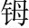
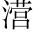
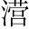

得西山後八日，尋山口西北道二百步，又得鈷古。母。潭。西二十五步，當湍而浚者為魚梁西山，在永州城西瀟江之滸。鈷。樑之上有丘焉潭，在西山之西。湍，波流瀠回之貌。浚，深也。魚梁，堰石障水而空其中以通魚之往來者。，生竹樹點「丘」字。。其石之突怒偃蹇，負土而出，爭為奇狀者，殆不可數含下「嘉木」、「美竹」。。其嶔上聲。○含下「奇石」。然相累而下者，若牛馬之飲於溪；其衝然角列而上者，若熊羆之登于山欽。。
丘之小不能一畝，可以籠而有之籠，包舉也。○又點「小」字。。問其主，曰：「唐氏之棄地，貨而不售酬。○以物售與人曰貨。。」問其價，曰：「止四百。」餘憐而售之。李深源、元克己時同遊，皆大喜，出自意外敘買丘。。即更取器用，鏟產。刈穢草，伐去惡木，烈火而焚之。嘉木立，美竹露，奇石顯敘開闢。。由其中以望，則山之高，雲之浮，溪之流，鳥獸之遨遊，舉熙熙然回巧獻技，以效茲丘之下敘玩賞。。枕蓆而臥，則清泠之狀與目謀，榮。之聲與耳謀，水回貌。，悠然而虛者與神謀，淵然而靜者與心謀敘玩賞中，生出靜機。。不匝簪入聲。旬而得異地者二匝，周也。十日曰旬。○此句應起「八日」、「又得」字。，雖古好事之士，或未能至焉收住。下忽從小丘發出感慨，寄意更遠。。
噫！以茲丘之勝，致之灃、鎬、鄠戶。、杜灃、鎬、鄠、杜，俱屬右扶風，漢上林苑地。，則貴遊之士爭買者，日增千金而愈不可得。今棄是州也，農夫漁父過而陋之，價四百，連歲不能售。而我與深源、克己獨喜得之，是其果有遭乎！書於石，所以賀茲丘之遭也感慨不盡。。
前幅平平寫來，意只尋常。而立名造語，自有別趣。至末從小丘上發出一段感慨，為茲丘致賀。賀茲丘，所以自吊也。